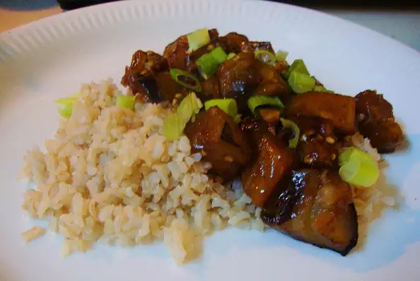

Eggplant

Description
A mildly spicy (or very spicy if you like) eggplant dish. My mother has been making this for me since I was a child. It is SO GOOD!!
Ingredients
- 3 tablespoons canola oil
- 4 Chinese eggplants, halved lengthwise and cut into 1 inch half moons
- 1 cup water
- 1 tablespoon crushed red pepper flakes
- 3 tablespoons garlic powder
- 5 teaspoons white sugar
- 1 teaspoon cornstarch
- 2 tablespoons light soy sauce
- 2 tablespoons oyster sauce
Steps
- Heat the canola oil in a skillet over high heat.
- Cook and stir the eggplant until soft, about 4 minutes.
- Stir in the water, red pepper flakes, and garlic powder. Cover and simmer until all the water is absorbed.
- Meanwhile, mix sugar, cornstarch, soy sauce, and oyster sauce in a bowl until sugar and cornstarch have dissolved.
- Stir sauce into the eggplant, making sure to evenly coat the eggplant.
- Cook until the sauce has thickened.